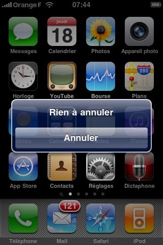
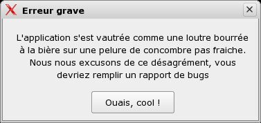
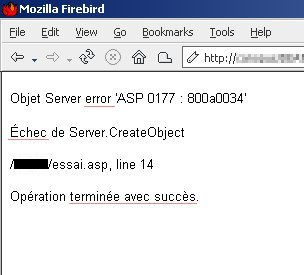
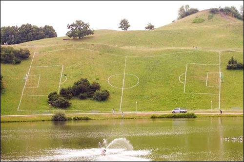
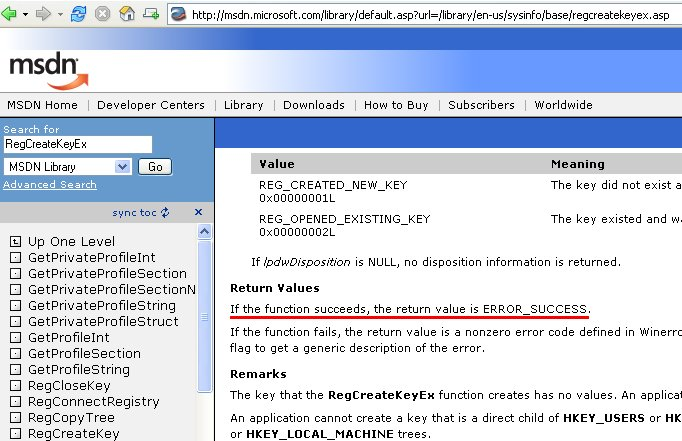
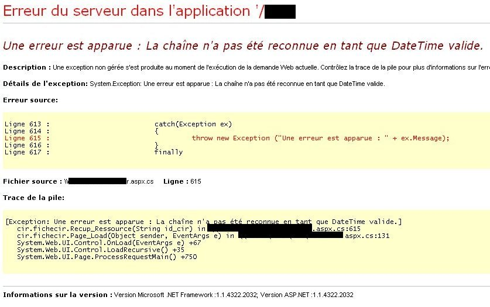
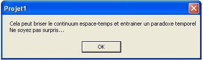
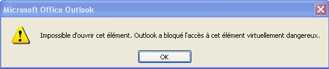
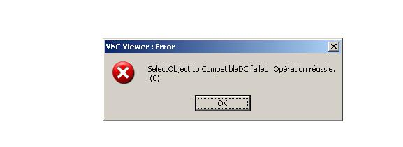

Pas de titre

Est-ce que ?

La formidable aventure qui n'a rien à voir...

J'ai réussi à échouer avec un certain succès, et je n'en suis pas peu fier !

Normalement, ça aurait pas du marcher, du coup on peut considérer que ce succès inattendu est une erreur...

La Rache ne s'applique pas qu'a l'informatique, la ville de munich le prouve. Par exemple, ce joli terrain de foot a été conçu et construit à La Rache...

Les grands comptes ont eux aussi expérimenté la méthode. Cet exemple a été cité sur le forum de La RACHE par un aimable lecteur. A la plus grande joie des utilisateurs l'API RegCreateKeyEx retourne ERROR_SUCCESS en cas de succès...

Et bien sûr le grand classique : l'exception gérée qui génère une exception non gérée, en générant une exception... euh... vous suivez ?

Le paradoxe est... comment dire... paradoxal !

Virtuellement, ton ordinateur va agoniser dans d'affreuses souffrances. Dans la vraie vie tu ferais mieux d'aller tondre la pelouse !

Tu t'y attendais pas à celle là !

L'échec a réussi
